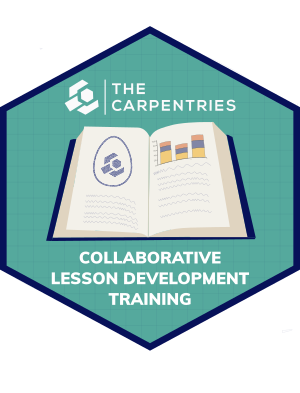

Summary and Schedule

This is a training curriculum teaching good practices in lesson design and development, and open source collaboration skills, using The Carpentries Workbench. The curriculum was designed to be taught over three full days or six half-days. The target audience is Carpentries Instructors with an idea for a new lesson they would like to create, especially if that lesson is intended for short-format training (e.g. part or all of a two-day workshop).
We believe that lesson development is easier and more successful when it is a joint effort among collaborators, so the activities and examples used in this training are best suited to groups of trainees who want to collaborate on a lesson project. Efforts have been made to also cater to lesson developers working alone.
Learning Objectives
After attending this training, participants will be able to:
- collaboratively develop and publish lessons using The Carpentries lesson infrastructure (aka The Carpentries Workbench): lesson template, GitHub, GitHub Pages, etc.
- identify and characterise the target audience for a lesson.
- define SMART learning objectives.
- explain the pedagogical value of authentic tasks.
- create exercises for formative assessment.
- explain how considerations of cognitive load can influence the pacing, length, and organisation of a lesson.
- configure and maintain accessible and usable lesson repositories using best practices, readily available for collaboration.
- identify and correct accessibility issues in a Carpentries lesson.
- update and improve lesson material guided by feedback and reflection from teaching.
- review and provide constructive feedback on lessons.
Prerequisites
Before joining Collaborative Lesson Development Training, participants should be able to:
- write formatted text - bold and italic, headings, links, bullet point and numbered lists - with Markdown.
- log into GitHub.com and create and edit files using the GitHub web interface.
See A Primer on Markdown and GitHub for resources to help learn these skills.
| Setup Instructions | Download files required for the lesson | |
| Duration: 00h 00m | 1. Introduction |
What is covered in this training? Who are the trainers? Who is participating? |
| Duration: 00h 45m | 2. Lesson Design |
What are the recommended steps to take when developing a new
lesson? What lesson do you want to develop during and after this workshop? |
| Duration: 01h 10m | 3. Identifying Your Target Audience |
Why is it so important to think about the target audience early in the
process? How can you ensure that your lesson reaches the right audience? |
| Duration: 01h 55m | 4. Break | |
| Duration: 02h 10m | 5. Defining Lesson Objectives/Outcomes |
How can describing the things you intend to teach aid the process of
writing a lesson? How can you be specific and realistic about what you will teach in your lesson? What are some of the risks associated with unrealistic or undefined expectations of a lesson? |
| Duration: 03h 30m | 6. Episodes | How can the objectives for a lesson be used to break its content into sections? |
| Duration: 04h 00m | 7. Break | |
| Duration: 05h 00m | 8. The Carpentries Workbench |
How is a lesson site set up and published with GitHub? What are the essential configuration steps for a new lesson? How do you create and modify the pages in a lesson? |
| Duration: 06h 20m | 9. Break | |
| Duration: 06h 35m | 10. Defining Episode Objectives |
How should objectives be written for a smaller part of a whole
lesson? How are objectives added to an episode page? |
| Duration: 07h 10m | 11. Break | |
| Duration: 07h 25m | 12. Designing Exercises |
How can you measure learners’ progress towards your lesson
objectives? Why are exercises so important in a lesson? What are some different types of exercises, and when should they be used? Why should we create assessments before we have written the explanatory content of our lesson? |
| Duration: 07h 35m | 13. Implementing Exercises | How should exercises be presented in a lesson website? |
| Duration: 08h 10m | 14. Break | |
| Duration: 08h 25m | 15. Example Data and Narrative |
Why should a lesson tell a story? What considerations are there when choosing an example dataset for a lesson? Where can I find openly-licensed, published data to use in a lesson? |
| Duration: 09h 30m | 16. Break | |
| Duration: 10h 30m | 17. How to Write a Lesson |
Why do we write explanatory content last? How can I avoid demotivating learners? How can I prioritise what to keep and what to cut when a lesson is too long? |
| Duration: 11h 40m | 18. Break | |
| Duration: 11h 55m | 19. How we Operate |
What are the important milestones in the development of a new
lesson? How can The Carpentries lesson development community help me complete my lesson? |
| Duration: 12h 20m | 20. Preparing to Teach |
What can I do to prepare to teach my lesson for the first time? How should I communicate lesson setup instructions to learners? What information should be recorded for instructors teaching a lesson? How should information be collected as part of the feedback process? |
| Duration: 13h 25m | 21. Wrap-up |
What have we learned so far? What needs to be done before the next part of the training? |
| Duration: 13h 55m | 22. Reflecting on Trial Runs | What did I learn when I taught my lesson? |
| Duration: 14h 50m | 23. Break | |
| Duration: 15h 05m | 24. Collaborating with Your Team |
How can I use GitHub to manage (report, assign, track, prioritise) tasks
of a lesson development project? What communication channels are effective for a lesson development team? How can I use GitHub to manage contributions from collaborators? |
| Duration: 16h 20m | 25. Break | |
| Duration: 17h 20m | 26. Collaborating with Newcomers |
What makes a project welcoming for newcomers? What information should I provide about the project to potential collaborators? How can I ensure regular progress on lesson development? |
| Duration: 18h 15m | 27. Project Management and Governance |
How can I use GitHub to manage a lesson development project? What strategies exist to help collaborators make decisions and govern an open source project? |
| Duration: 19h 00m | 28. Final Wrap-up |
What steps can you take to be a good collaborator? How can we improve this training? |
| Duration: 19h 30m | Finish |
The actual schedule may vary slightly depending on the topics and exercises chosen by the instructor.
Before joining this training, participants should have a GitHub account. Detailed instructions on how to create a GitHub account can be found in the GitHub Docs pages